P1 - stopień podstawowy
Płetwonurek LOK/CMAS*
1 950zł
- kurs 1 800 zł + certyfikat 150 zł
- komplet sprzętu w cenie (poza ABC)
- nurkowanie do 20 m
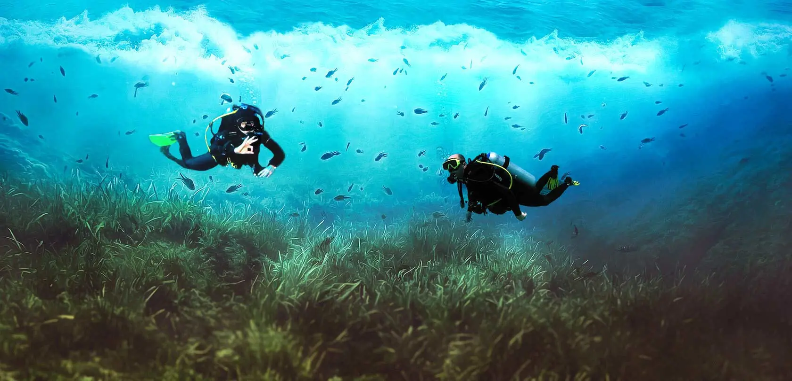
Klub Płetwonurków LOK Litoral szkoli od 1965 roku. Grupy do 4 osób, klubowy sprzęt i instruktorzy LOK/CMAS.
Zobacz kursy i cenyKlub powstał w 1965 roku przy Lidze Obrony Kraju. Na początku nazywał się Delfin, a po kilku latach przyjął nazwę od najbardziej ożywionej strefy jeziora - litoralu.
Tak jest u nas do dziś. Większość osób, które zdobyły z nami uprawnienia, zostaje w klubie: nurkuje, jeździ na wyprawy i spotyka się z nami w poniedziałki przy Pomorskiej.
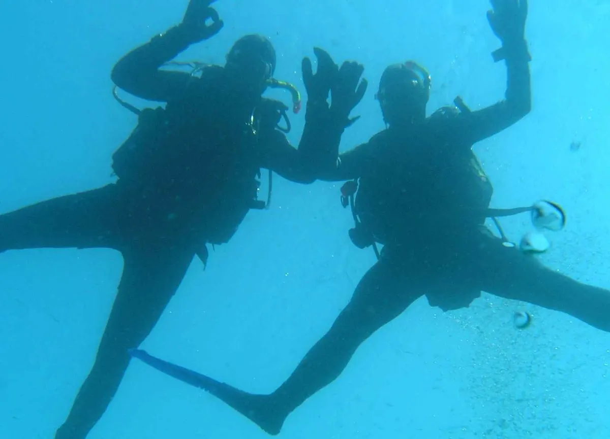
Teoria i basen trwają przez cały rok, a kurs kończy się latem nurkowaniami w wodach otwartych. Po podstawowym kursie P1 możesz nurkować do 20 metrów.
Na pierwszych zajęciach doradzimy, jakie ABC kupić i gdzie.
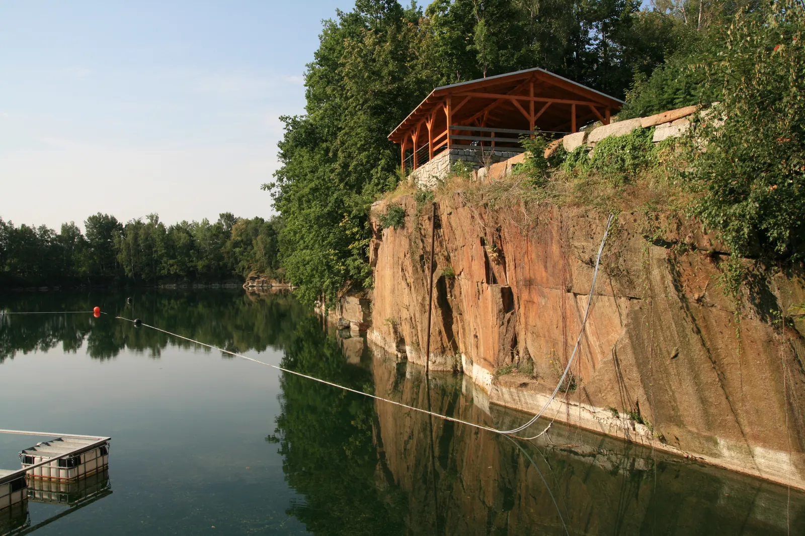
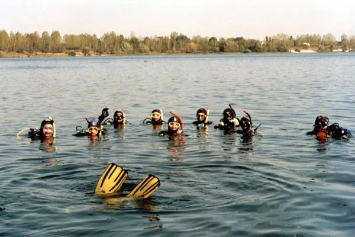
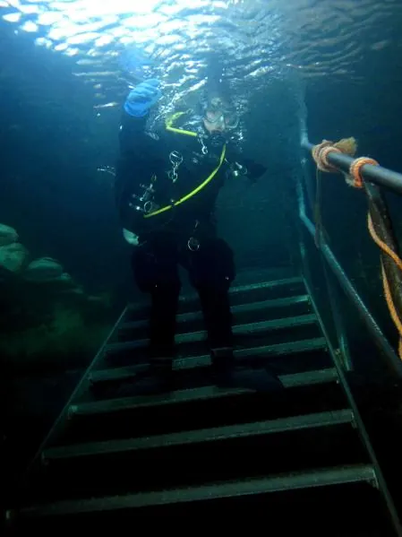
Ceny z certyfikatem, materiały szkoleniowe w cenie. Płatność w ratach do uzgodnienia.
P1 - stopień podstawowy
1 950zł
P2 - stopień średni
2 150zł
P3 - stopień wyższy
2 450zł
| Płetwonurek nitroksowy (BNx) | 650 zł |
| Nurkowanie w skafandrach suchych (SS) | 650 zł |
| Nawigacja podwodna (NP), kompas w cenie | 650 zł |
| Nurkowanie nocne (NN), latarka w cenie | 650 zł |
| Poszukiwanie i wydobywanie (PW) | 650 zł |
| Nurkowanie w masce pełnotwarzowej | 650 zł |
| Nurkowanie w zestawie dwubutlowym | 650 zł |
| Nurkowanie wrakowe | 900 zł |
| Eksplorator 30 | 1 150 zł |
| Płetwonurek młodzieżowy: brązowy, srebrny, złoty | cena tel. |
Mamy status DAN Partner. Polecamy pakiet Sport Bronze (67 euro/rok) dla P1/P2 i Sport Silver (97 euro/rok) dla P3. Przy zakupie podaj nasz numer polecający 141442.
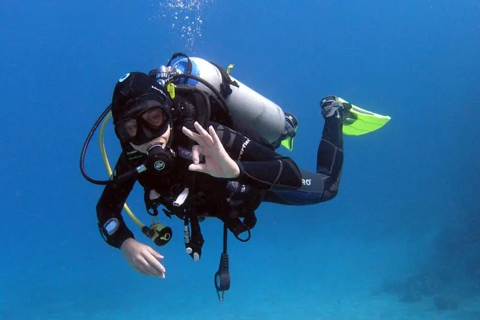
Nie wiesz jeszcze, czy nurkowanie będzie Twoją pasją? Przez około 2 godziny masz instruktora tylko dla siebie i sprawdzasz, jak to jest oddychać pod wodą.
300 zł skrócona teoria, potrzebny sprzęt
i jedno nurkowanie do 60 minut
Jeśli potem zapiszesz się na kurs P1, odejmiemy opłatę za intro od ceny kursu.
Umów intro: 501 430 57721 września 2025 roku zorganizowaliśmy trzecią edycję akcji „Sprzątanie Dna Zakrzówka” - razem z Zarządem Infrastruktury Sportowej w Krakowie, Strażą Miejską i nurkami z zaprzyjaźnionych klubów.
Pod pływającymi basenami śmieci było zauważalnie mniej niż rok wcześniej, więc kolejne edycje obejmą następne części akwenu. Z dna wyciągnęliśmy m.in.:
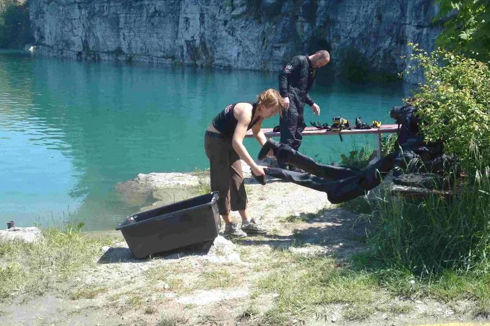
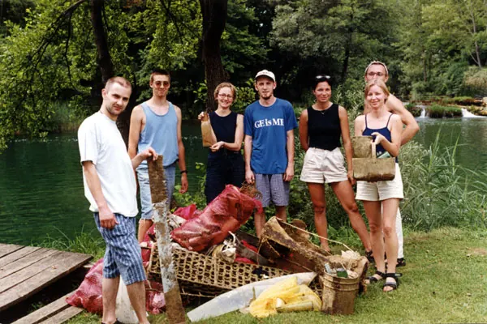
Wyjazdy na polskie i zagraniczne akweny to w klubie tradycja: od Hańczy i Zakrzówka po Egipt, Sardynię i Francję.
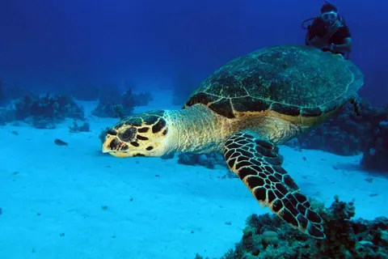
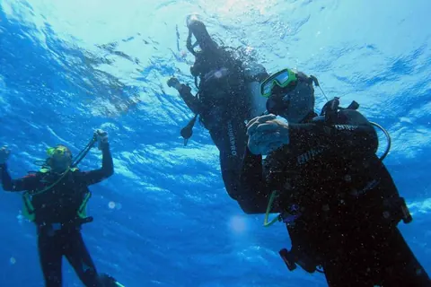
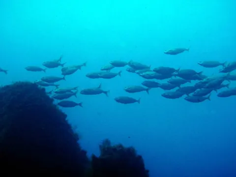
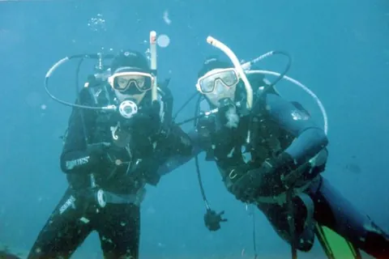
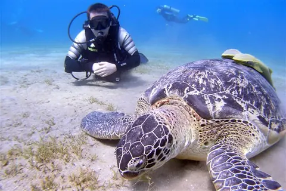
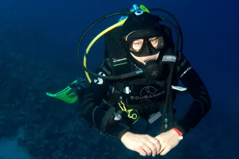
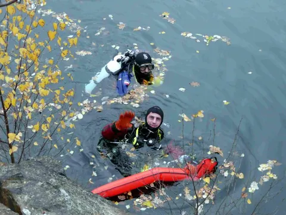
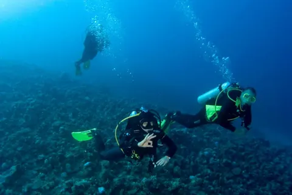
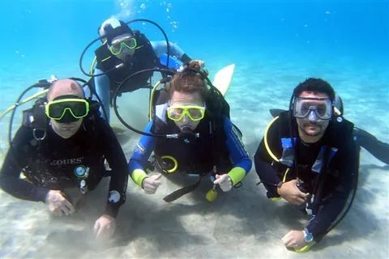
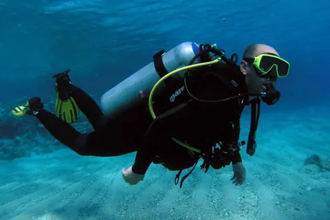
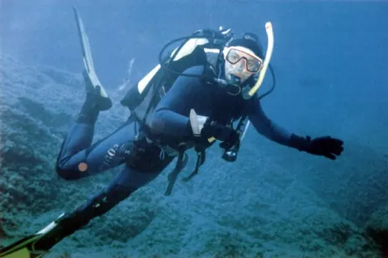
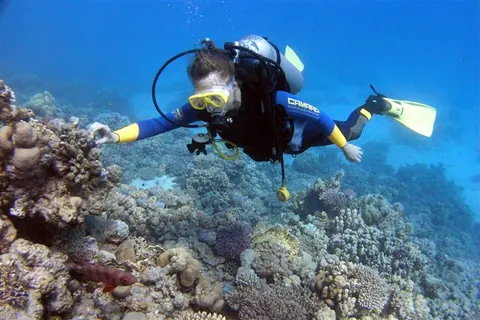
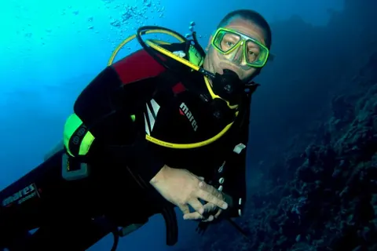
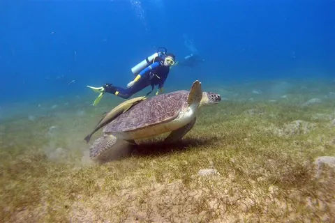
1 / 14
W sprawie kursów zadzwoń bezpośrednio do instruktora.
Wszystkich chętnych do nurkowania i szkolenia zapraszamy do siedziby klubu. Opowiemy o kursach i pokażemy sprzęt.
Mapa: ul. Pomorska 2, Kraków